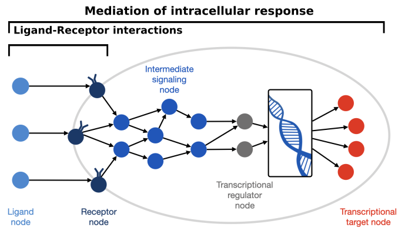
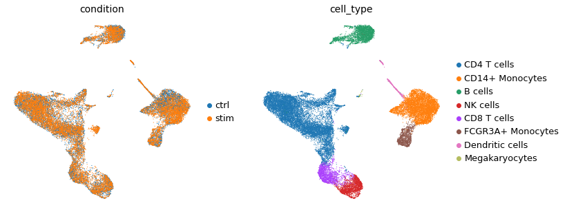
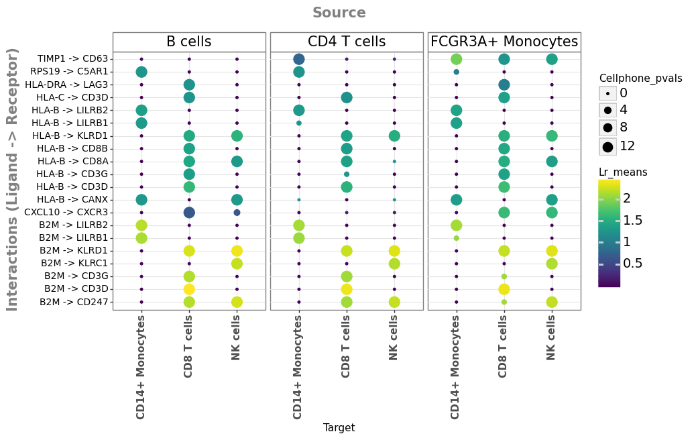
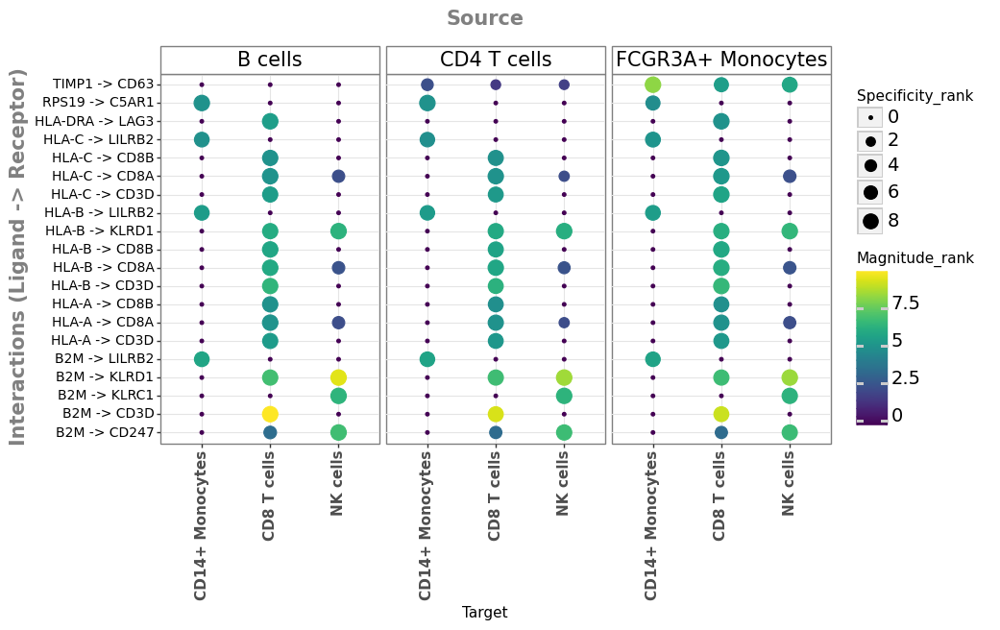
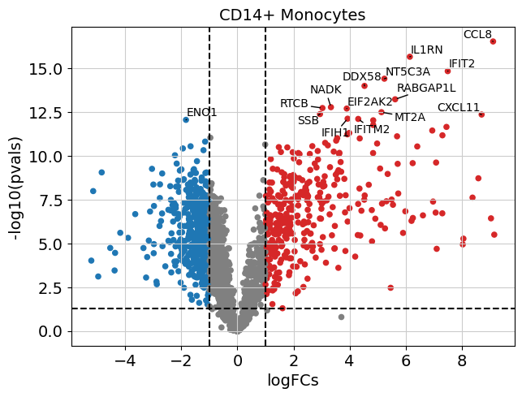
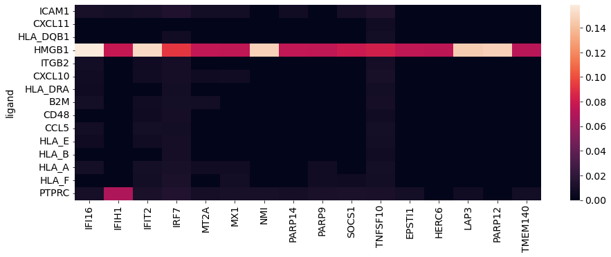
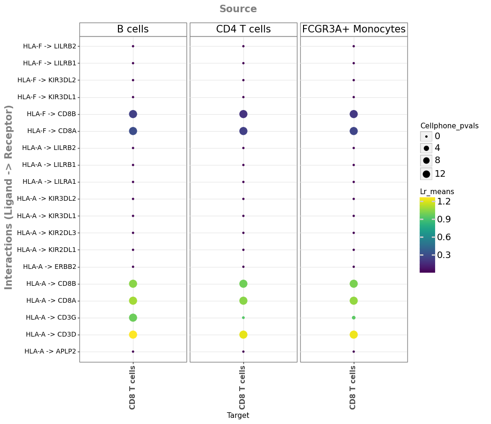
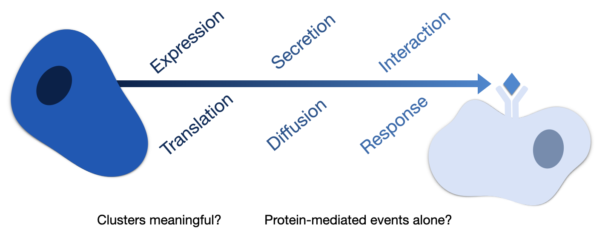

23. 细胞间通讯#
关键要点
配体-受体推断方法与细胞内信号模型（如 NicheNet）是理解 CCC 的互补方法。
从单细胞转录组学数据推断细胞间通讯（CCC），依赖于这样一个假设：基因表达可作为蛋白质丰度和细胞间相互作用的替代指标。
环境设置
安装 conda:
在创建环境之前，请确保 conda 已安装在您的系统中。
保存 yml 内容:
将 yml 选项卡中的内容复制到名为
environment.yml的文件中。
创建环境:
打开终端或命令提示符。
运行以下命令：
conda env create -f environment.yml
激活环境:
创建好环境后，使用以下命令激活它：
conda activate <environment_name>
替换
<environment_name>，名称就是在environment.yml文件中指定的那个。在 yml 文件里，它看起来像这样：name: <environment_name>
验证安装:
通过运行以下命令，检查环境是否创建成功：
conda env list
name: cellcell
channels:
- conda-forge
- bioconda
- r
- defaults
dependencies:
- conda-forge::python=3.12.12
- conda-forge::r-base=4.4.3
- conda-forge::rpy2=3.6
- conda-forge::scanpy=1.11.5
- conda-forge::scikit-misc
- bioconda::anndata2ri==1.1
- bioconda::bioconductor-complexheatmap
- bioconda::bioconductor-limma
- conda-forge::pip
- r-seurat
- r-dplyr
- r-tidyr
- r-ggplot2
- r-purrr
- r-diagrammer
- r-mlrmbo
- r-dicekriging
- r-hmisc
- r-remotes
- r-randomforest
- r-diffobj
- r-rstatix
- r-ggpubr
- pip:
- adjusttext==0.7.3
- decoupler==1.3.3
- liana==0.1.6
- mizani==0.8.1
- palettable==3.3.0
- plotnine==0.10.1
TL;DR：本章简要概述从单细胞转录组学数据推断细胞间通讯的基本概念和假设。我们给出 CCC 推断中两种最常见方法的示例：侧重于配体-受体相互作用的方法，以及纳入下游响应的方法。
23.1. 动机#
细胞通讯是细胞对来自其环境、以及来自自身的刺激作出反应的过程。在多细胞生物中，细胞之间的动态协调（也称细胞间通讯，CCC）参与许多生物学过程，例如凋亡和细胞迁移，因此对稳态和疾病都至关重要。CCC 通常关注由蛋白质介导的相互作用，最典型的就是一个分泌出的配体与其相应的质膜受体结合。不过，这一图景还可以拓宽，纳入分泌酶、细胞外基质蛋白、转运蛋白，以及需要细胞之间物理接触的相互作用，例如细胞-细胞粘附蛋白和缝隙连接（gap junction） [Armingol et al., 2021]。细胞通讯也并非独立于其他过程，恰恰相反，因为外部刺激通常会引发下游响应。就 CCC 而言，这通常表现为在接收信号的细胞（即接收细胞）中诱导出经典通路和下游转录因子。这些外部刺激最终会改变接收细胞的功能，而这种改变又会通过这些细胞随后与其微环境的相互作用进一步传播。传统上，研究 CCC 需要专门的原位（in-situ）生化实验，例如邻近标记蛋白质组学、共免疫沉淀（co-immunoprecipitation）和酵母双杂交筛选 [Armingol et al., 2021]。然而，转录组学数据生成技术的快速发展和成本下降，带来了一次范式转变：不再只关注存在哪些类型的细胞，而是关注它们之间的关系 [Almet et al., 2021]。因此，从单细胞数据推断 CCC 如今正成为一种常规方法，能够提供关于体内（in vivo）细胞间串扰的系统层面假设。
23.2. 方法#
由于这种关注度的提升，涌现出了许多从单细胞转录组学推断 CCC 的计算工具，它们可以分为：只预测 CCC 相互作用的工具（通常称为配体-受体推断方法，例如 [Efremova et al., 2020, Hou et al., 2020, Jin et al., 2021, Raredon et al., 2022]），以及那些还额外估计由 CCC 诱导的细胞内活性的工具（例如 [Browaeys et al., 2020, Hu et al., 2021, Wang et al., 2019]）。这两类工具都用基因表达信息作为蛋白质丰度的替代指标，并且通常需要把细胞聚类成具有生物学意义的分组（见“注释”教程）。这些 CCC 工具推断成对细胞分组之间的细胞间串扰，其中一组是 CCC 事件的来源、另一组是接收者。因此，CCC 事件通常被表示为由来源细胞群和接收细胞群表达的蛋白质之间的相互作用。
关于相互作用蛋白质的信息通常从先前的知识资源中提取。在配体-受体方法中，相互作用也可以由异构蛋白复合物来表示，因为不同的子单位组合可以诱发不同的响应，蛋白质复合信息被显示可以降低假阳性率。[Efremova et al., 2020, Jin et al., 2021, Liu et al., 2022]。另一方面，那些对细胞内信号建模的方法还会利用接收细胞类型中的功能信息，因此需要额外的信息，例如细胞内蛋白质-蛋白质相互作用网络和/或基因调控相互作用。
最近的工作强调：方法和/或资源的选择，会导致使用不同工具时推断预测之间的共识有限 [Dimitrov et al., 2022, Liu et al., 2022, Wang et al., 2022]，因此在解读其输出时要谨慎。CCC 领域还因缺乏真值（ground truth）而进一步受困 [Almet et al., 2021, Armingol et al., 2021]——真值需要能够捕捉大量细胞和分子之间复杂而动态的相互作用。尽管如此，独立的评估表明，CCC 方法对噪声的引入相当稳健 [Dimitrov et al., 2022, Liu et al., 2022, Wang et al., 2022]，并且与细胞内信号、空间信息等替代数据模态在很大程度上一致 [Dimitrov et al., 2022, Liu et al., 2022].
在本章中，我们首先介绍并举例说明也许是最常见、最简单的 CCC 方法，即用 CellPhoneDB 做配体-受体推断 [Efremova et al., 2020] LIANA [Dimitrov et al., 2022]。然后，我们以 NicheNet 为例，展示一种侧重于 CCC 事件下游细胞内活性的 CCC 推断方法 [Browaeys et al., 2020]。最后，我们强调从单细胞转录组学数据推断 CCC 的共同假设和局限，以及如何提高对细胞间通讯预测可信度的建议。请注意，为简洁起见我们在此做了概括，但实际上存在大量不同的、以及新近涌现的 CCC 方法。我们在下文中重点介绍其中一些 Outlook 节。
{kind=link}

图22.1细胞-细胞通讯概览
23.3. 环境设置#
# python libs
import decoupler as dc
import liana as li
import matplotlib.pyplot as plt
import numpy as np
import pandas as pd
import scanpy as sc
import seaborn as sns
import session_info
# Setting up R dependencies
import anndata2ri
anndata2ri.activate()
%load_ext rpy2.ipython
%%R
suppressPackageStartupMessages({
library(reticulate)
library(ggplot2)
library(tidyr)
library(dplyr)
library(purrr)
library(tibble)
})
# figure settings
sc.settings.set_figure_params(dpi=200, frameon=False)
sc.set_figure_params(dpi=200, facecolor="white")
sc.set_figure_params(figsize=(5, 5))
23.4. 案例研究#
作为一个简单的例子，我们将考察来自 8 名狼疮患者的约 25k 个 PBMC，每位患者在 IFN-β 刺激前后各取一份 [Kang et al., 2018]。请注意，出于本教程的目的，我们通过聚焦于 PBMC，假设它们之间发生了协调一致的事件。
因此，让我们首先下载预先处理的数据。
# Read in
adata = sc.read(
"kang_counts_25k.h5ad", backup_url="https://figshare.com/ndownloader/files/34464122"
)
# Store the counts for later use
adata.layers["counts"] = adata.X.copy()
应用基本的质量控制步骤，去除任何低质量细胞和低表达基因。我们建议用户参阅 质量控制 一章，以了解更全面的 QC 步骤。
sc.pp.filter_cells(adata, min_genes=200)
sc.pp.filter_genes(adata, min_cells=3)
# Store the counts for later use
adata.layers["counts"] = adata.X.copy()
# Rename label to condition, replicate to patient
adata.obs = adata.obs.rename({"label": "condition", "replicate": "patient"}, axis=1)
# assign sample
adata.obs["sample"] = (
adata.obs["condition"].astype("str") + "&" + adata.obs["patient"].astype("str")
)
我们还会对数据做归一化，以确保所有细胞的计数深度被拉平，因为我们需要让基因表达值在各细胞类型之间具有可比性。我们建议用户参阅 归一化 一章，以了解更多信息和可能更适合其数据的其他归一化方法。
# log1p normalize the data
sc.pp.normalize_total(adata)
sc.pp.log1p(adata)
在本案例研究中，我们将假设：B 细胞和 CD4 T 细胞等细胞类型扮演信号介导者的角色，而 CD8 T 细胞和自然杀伤（NK）细胞等其他类型，则由执行响应的细胞组成。换句话说，我们把 B 细胞和 CD4 T 细胞当作 CCC 信号的来源，而后者则是 CCC 刺激的接收方。这当然是一种过度简化，因为信号的来源和接收方预计是动态、多向的，因此我们把哪种细胞类型当作哪一类，取决于心中的假设。
adata.obs["cell_type"].cat.categories
Index(['CD4 T cells', 'CD14+ Monocytes', 'B cells', 'NK cells', 'CD8 T cells',
'FCGR3A+ Monocytes', 'Dendritic cells', 'Megakaryocytes'],
dtype='object')
显示预先计算好的 UMAP，仅用于展示数据
sc.pl.umap(adata, color=["condition", "cell_type"], frameon=False)
/home/dbdimitrov/anaconda3/envs/cellcell/lib/python3.10/site-packages/scanpy/plotting/_tools/scatterplots.py:364: UserWarning: No data for colormapping provided via 'c'. Parameters 'cmap' will be ignored
/home/dbdimitrov/anaconda3/envs/cellcell/lib/python3.10/site-packages/scanpy/plotting/_tools/scatterplots.py:364: UserWarning: No data for colormapping provided via 'c'. Parameters 'cmap' will be ignored

23.4.1. 配体-受体推断#
首先，我们使用 CellPhoneDB（v2）配体-受体方法 [Efremova et al., 2020].
我们将只在 IFN-β 刺激后的数据上运行 CellPhoneDB，因为这类方法最初是为在“稳态”数据中推断 CCC 事件而设计的；换句话说，它们并非用于跨样本或跨条件，而是一次只用在单一条件或样本上。不过请注意，确实存在一些跨条件应用配体-受体方法的途径，但它们超出了本教程的范围，我们只在下文中提及 Outlook 节。
adata_stim = adata[adata.obs["condition"] == "stim"].copy()
adata_stim
AnnData object with n_obs × n_vars = 12301 × 15701
obs: 'nCount_RNA', 'nFeature_RNA', 'tsne1', 'tsne2', 'condition', 'cluster', 'cell_type', 'patient', 'nCount_SCT', 'nFeature_SCT', 'integrated_snn_res.0.4', 'seurat_clusters', 'n_genes', 'sample'
var: 'name', 'n_cells'
uns: 'log1p', 'condition_colors', 'cell_type_colors'
obsm: 'X_pca', 'X_umap'
layers: 'counts'
# import cellphonedb method via liana
from liana.method import cellphonedb
CellPhoneDB 是最常用的 CCC 工具之一，它把细胞间通讯事件表示为参与相互作用的蛋白质的平均基因表达。所涉及的蛋白质也可以采取异聚体复合物的形式，在这种情况下，会取各亚基中最小的基因表达。除了表达平均值之外，相互作用的显著性是相对于一个零分布来确定的，该零分布通过打乱细胞分组标签而生成。
请注意，我们是按细胞类型分组的，因此得到的 CCC 统计量会反映先前预定义好的细胞类型。
cellphonedb(
adata_stim, groupby="cell_type", use_raw=False, return_all_lrs=True, verbose=True
)
Using `.X`!
Converting mat to CSR format
227 features of mat are empty, they will be removed.
/home/dbdimitrov/anaconda3/envs/cellcell/lib/python3.10/site-packages/pandas/core/indexing.py:1728: ImplicitModificationWarning: Trying to modify attribute `.obs` of view, initializing view as actual.
0.46 of entities in the resource are missing from the data.
Generating ligand-receptor stats for 12301 samples and 15474 features
100%|██████████| 1000/1000 [00:22<00:00, 45.07it/s]
默认情况下，结果会就地写入 anndata 对象中，更具体地说是在 .uns['liana_res'].
我们来查看 CellPhoneDB 方法的输出：
adata_stim.uns["liana_res"].head()
| ligand | ligand_complex | ligand_means | ligand_props | receptor | receptor_complex | receptor_means | receptor_props | source | target | lrs_to_keep | lr_means | cellphone_pvals | |
|---|---|---|---|---|---|---|---|---|---|---|---|---|---|
| 0 | LGALS9 | LGALS9 | 0.072739 | 0.101973 | PTPRC | PTPRC | 0.457824 | 0.501761 | CD4 T cells | CD4 T cells | True | 0.265281 | 1.0 |
| 9 | LGALS9 | LGALS9 | 0.072739 | 0.101973 | CD44 | CD44 | 0.304042 | 0.364741 | CD4 T cells | CD4 T cells | True | 0.188391 | 1.0 |
| 37 | VIM | VIM | 0.507059 | 0.519725 | CD44 | CD44 | 0.304042 | 0.364741 | CD4 T cells | CD4 T cells | True | 0.405550 | 1.0 |
| 38 | PKM | PKM | 0.230863 | 0.278267 | CD44 | CD44 | 0.304042 | 0.364741 | CD4 T cells | CD4 T cells | True | 0.267453 | 1.0 |
| 66 | LGALS9 | LGALS9 | 0.072739 | 0.101973 | CD47 | CD47 | 0.213795 | 0.272807 | CD4 T cells | CD4 T cells | True | 0.143267 | 1.0 |
这里可以看到，配体和受体两个实体都提供了统计量，更具体地说： ligand 和 receptor 通常是相互作用的两个实体。提醒一下，CCC 事件并不限于分泌型信号，但我们把它们统称为 ligand 和 receptor 为了简单。
此外，对于异聚体复合物（heteromeric complex）， ligand 和 receptor 列表示表达量最小的那个亚基，而 *_complex 对应于实际的复合物，各亚基之间用以下符号分隔 _.
source和target列分别代表每个相互作用的来源/发送方和靶标/接收方细胞身份*_props:代表表达实体的细胞比例。默认情况下，在 CellPhoneDB 和 LIANA 中，如果某个相互作用里任一实体在某种细胞类型中表达的细胞比例不超过 10%，就被视为假阳性——其前提假设是：既然 CCC 发生在细胞类型之间，那么细胞类型内就应当有足够比例的细胞表达这些基因。
*_means：每种细胞类型中实体表达的平均值lr_means：平均的配体-受体表达，作为衡量配体-受体相互作用强度的指标，即 magnitudecellphone_pvals：基于置换（permutation）的 p 值，作为衡量相互作用特异性的指标，即 specificity
请注意: ligand, receptor, source, and target 这些列由每个配体-受体方法返回，而其余的列则会因配体-受体方法的不同而变化，因为每种方法都依赖不同的假设和打分函数，因此每种方法返回的配体-受体分数也不同。尽管如此，大多数方法通常都使用一对打分函数——其中一种往往对应于相互作用的强度（即 magnitude ），而另一种则反映 specificity ，即某个给定相互作用对于一对细胞身份的特异性。
23.4.1.1. 可视化探索#
我们现在可以把刚刚得到的结果以点图（dotplot）的形式可视化，其中每一行代表来源/发送方（上）与靶标/接收方（下）细胞类型之间被优先选出的相互作用。
li.pl.dotplot(
adata=adata_stim,
colour="lr_means",
size="cellphone_pvals",
inverse_size=True, # we inverse sign since we want small p-values to have large sizes
# We choose only the cell types which we wish to plot
source_labels=["CD4 T cells", "B cells", "FCGR3A+ Monocytes"],
target_labels=["CD8 T cells", "CD14+ Monocytes", "NK cells"],
# since cpdbv2 suggests using a filter to FPs
# we can filter the interactions according to p-values <= 0.01
filter_fun=lambda x: x["cellphone_pvals"] <= 0.01,
# as this type of methods tends to result in large numbers
# of predictions, we can also further order according to expression magnitude
orderby="lr_means",
orderby_ascending=False, # we want to prioritize those with highest expression
top_n=20, # and we want to keep only the top 20 interactions
figure_size=(9, 5),
size_range=(1, 6),
)

<ggplot: (8783502753003)>
很好，我们得到了一些可能与 IFN-β 刺激相关的相互作用。
我们还可以看到，相互作用的强度（表达强度）和特异性都依赖于细胞类型。例如，HLA-B 与 CD8A/B 的潜在结合，按逻辑只在接收细胞是 CD8 T 细胞时才会发生。
23.4.1.2. 用 LIANA 生成配体-受体共识#
鉴于据报道不同配体-受体方法所推断的相互作用之间一致性有限，作为进一步提高对某个关注相互作用置信度的一种办法，可以检查这个相互作用是否被不止一种方法预测为相关。同样地，也可以使用多种方法并聚焦于它们的共识，换句话说，聚焦于被一致预测为相关的相互作用。为此，我们将运行 rank_aggregate 方法（来自 LIANA） [Dimitrov et al., 2022]，它会生成各方法间高排名相互作用的概率分布。
我们先来查看 LIANA 中的各配体-受体方法：
li.method.show_methods()
| Method Name | Magnitude Score | Specificity Score | Reference | |
|---|---|---|---|---|
| 0 | CellPhoneDB | lr_means | cellphone_pvals | Efremova, M., Vento-Tormo, M., Teichmann, S.A.... |
| 0 | Connectome | expr_prod | scaled_weight | Raredon, M.S.B., Yang, J., Garritano, J., Wang... |
| 0 | log2FC | None | lr_logfc | Dimitrov, D., Türei, D., Garrido-Rodriguez, M.... |
| 0 | NATMI | expr_prod | spec_weight | Hou, R., Denisenko, E., Ong, H.T., Ramilowski,... |
| 0 | SingleCellSignalR | lrscore | None | Cabello-Aguilar, S., Alame, M., Kon-Sun-Tack, ... |
| 0 | CellChat | lr_probs | cellchat_pvals | Jin, S., Guerrero-Juarez, C.F., Zhang, L., Cha... |
| 0 | Rank_Aggregate | magnitude_rank | specificity_rank | Dimitrov, D., Türei, D., Garrido-Rodriguez, M.... |
| 0 | Geometric Mean | lr_gmeans | gmean_pvals | CellPhoneDBv2's permutation approach applied t... |
现在我们来运行 Rank_Aggregate 方法，它本质上会在后台运行其他各方法，然后生成一个共识。
from liana.method import rank_aggregate
rank_aggregate(
adata_stim, groupby="cell_type", return_all_lrs=True, use_raw=False, verbose=True
)
Using `.X`!
Converting mat to CSR format
227 features of mat are empty, they will be removed.
/home/dbdimitrov/anaconda3/envs/cellcell/lib/python3.10/site-packages/pandas/core/indexing.py:1728: ImplicitModificationWarning: Trying to modify attribute `.obs` of view, initializing view as actual.
0.46 of entities in the resource are missing from the data.
Generating ligand-receptor stats for 12301 samples and 15474 features
Assuming that counts were `natural` log-normalized!
Running CellPhoneDB
100%|██████████| 1000/1000 [00:05<00:00, 171.04it/s]
Running Connectome
Running log2FC
Running NATMI
Running SingleCellSignalR
Running CellChat
100%|██████████| 1000/1000 [01:59<00:00, 8.35it/s]
现在我们来看看 liana 的 rank_aggregate 的输出：
adata_stim.uns["liana_res"].drop_duplicates(
["ligand_complex", "receptor_complex"]
).head()
| source | target | ligand_complex | receptor_complex | lr_means | cellphone_pvals | expr_prod | scaled_weight | lr_logfc | spec_weight | lrscore | lr_probs | cellchat_pvals | steady_rank | specificity_rank | magnitude_rank | |
|---|---|---|---|---|---|---|---|---|---|---|---|---|---|---|---|---|
| 1129 | CD8 T cells | CD8 T cells | B2M | CD3D | 2.562213 | 0.0 | 3.070147 | 1.070524 | 0.690730 | 0.062383 | 0.982125 | 0.123504 | 0.0 | 2.092188e-11 | 1.415831e-09 | 9.840017e-13 |
| 831 | CD8 T cells | NK cells | B2M | KLRD1 | 2.511733 | 0.0 | 2.622731 | 1.541763 | 0.858930 | 0.080626 | 0.980689 | 0.110393 | 0.0 | 2.092188e-11 | 1.415831e-09 | 8.965786e-11 |
| 468 | FCGR3A+ Monocytes | CD14+ Monocytes | TIMP1 | CD63 | 1.877567 | 0.0 | 3.374182 | 1.478816 | 1.808744 | 0.123245 | 0.982935 | 0.136754 | 0.0 | 2.092188e-11 | 1.415831e-09 | 9.348292e-09 |
| 1513 | CD8 T cells | FCGR3A+ Monocytes | B2M | LILRB2 | 2.402974 | 0.0 | 1.658766 | 1.466587 | 0.604138 | 0.078486 | 0.975838 | 0.063762 | 0.0 | 2.092188e-11 | 1.415831e-09 | 1.935320e-08 |
| 836 | CD8 T cells | NK cells | B2M | CD247 | 2.414776 | 0.0 | 1.763377 | 1.156763 | 0.644404 | 0.074642 | 0.976548 | 0.041130 | 0.0 | 2.092188e-11 | 1.415831e-09 | 1.228218e-07 |
这里，我们可以看到所有方法的评分函数的输出（如果想知道哪个分数属于哪种方法，请参考上表）。更重要的是，我们还为每个相互作用得到了 magnitude_rank 和 specificity_rank ，它们代表共识的相互作用 magnitude （表达强度）和 specificity （分别针对所有细胞类型对）。例如，回到 CellPhoneDB， lr_mean 和 cellphone_pvals 将相应汇总为这些内容。
我们来绘制同样的图，但这次使用各方法的汇总结果：
li.pl.dotplot(
adata=adata_stim,
colour="magnitude_rank",
size="specificity_rank",
inverse_colour=True, # we inverse sign since we want small p-values to have large sizes
inverse_size=True,
# We choose only the cell types which we wish to plot
source_labels=["CD4 T cells", "B cells", "FCGR3A+ Monocytes"],
target_labels=["CD8 T cells", "CD14+ Monocytes", "NK cells"],
# since the rank_aggregate can also be interpreted as a probability distribution
# we can again filter them according to their specificity significance
# yet here the interactions are filtered according to
# how consistently highly-ranked is their specificity across the methods
# filterby="specificity_rank",
# filter_lambda=lambda x: x <= 0.05,
filter_fun=lambda x: x["specificity_rank"] <= 0.05,
# again, we can also further order according to magnitude
orderby="magnitude_rank",
orderby_ascending=True, # prioritize those with lowest values
top_n=20, # and we want to keep only the top 20 interactions
figure_size=(9, 5),
size_range=(1, 6),
)

<ggplot: (8783489520283)>
尽管 CellPhoneDB 和 LIANA 优先给出的相互作用在生物学上似乎可信、并可能与治疗相关，但要确定它们的相关性仍然具有挑战性。特别是，这些方法“以无假说的方式产生系统层面洞见”的优势，恰恰也是它们的一大劣势之一。具体来说，因为配体-受体工具会为每一对细胞类型返回所有看似可信的配体-受体相互作用，所以我们最终会得到庞大的相互作用列表，而为后续实验验证挑选靶标可能很困难。
因此，在做实验验证之前，我们建议：任何潜在的相互作用假设都应当有额外的先验知识来支撑。这可能包括针对特定条件的领域知识（例如所关注的细胞类型或受体），以及正交的模态，例如蛋白质丰度、空间共定位或下游信号。为此，我们还进一步建议读者参考 基因集富集和通路分析 和 空间 CCC (待补)各章。
23.4.2. 用 NicheNet 建模差异性的细胞间信号传导#
NicheNet 是另一类 CCC 方法，它考虑的是 细胞内信号效应，由 细胞间相互作用所触发 [Browaeys et al., 2020].
简而言之，NicheNet 推断配体与它们可能调节的下游靶标之间的关联 [Browaeys et al., 2020]。或者换句话说，NicheNet 假设某个发送方/来源细胞类型产生一种配体，而该配体与某个特定接收方/靶细胞类型的结合，会引发一个信号传播过程，进而影响主基因调控因子（即转录因子）及其下游靶标。因此，关于“哪些靶基因被哪些配体-受体对所调节”的预测，可能为正在进行的 CCC 事件提供有趣的假设。此外，某个特定配体-受体对的靶基因在某种接收细胞类型中富集，也可以表明这个配体-受体对在功能上是活跃的。总之，NicheNet 分析因此可以用来：1) 推断已表达的配体-受体相互作用的潜在靶基因；2) 根据靶基因在接收方中的富集程度，对配体-受体相互作用进行优先级排序。这种富集被称为“配体活性”，与转录因子活性相类比 基因集富集和通路分析.
为了完成这些任务，NicheNet 利用了关于配体-靶标关联的先验知识。然而，与配体-受体数据库不同，并不存在全面的配体-靶标数据库。因此，NicheNet 通过整合三层先验知识——涵盖配体-受体、细胞内信号和基因调控相互作用——来预测配体-靶标关联。利用这三层信息，NicheNet 为每条配体-靶标连边计算一个调控潜力分数。这个调控潜力表示：先验知识在多大程度上支持“某个配体可能调控某个靶基因的表达”。为计算调控潜力，NicheNet 首先在整合后的信号网络上使用一种网络扩散算法——个性化 PageRank（PPR）——来估计某个给定配体可能向某个特定调控因子传递信号的概率。具体来说，NicheNet 中的 PPR 实现把某个给定配体作为所关注的种子节点。由此，在信号网络中离该配体更近的节点会比更远的节点得到更高的分数，其假设是：在网络中位于配体附近的调控因子，比更远的节点更可能被该配体调节。因此，对数据库中所有配体应用 PPR，就得到一个“配体-调控因子”的信号概率矩阵；再把它与“调控因子到靶基因”的权重矩阵相乘，就得到配体-靶标的调控潜力分数 {cite}browaeys_2020。从概念上讲，这意味着：如果某个配体能向某个靶基因的调控因子传递信号，那么该“配体-靶标”对就会获得较高的调控潜力分数。随后，这些来自先验知识的分数会与相互作用细胞的表达数据结合使用，以对配体-受体相互作用进行优先级排序并预测其靶基因。
由于 NicheNet 关注的是配体如何影响潜在相互作用细胞中的基因表达，人们需要能够定义：哪些基因表达变化可能（部分地）由 CCC 过程引起。为了根据配体在接收细胞类型中的潜在配体活性对其排序，需要一组“假定在接收细胞类型中受 CCC 事件影响”的基因。NicheNet 的作者建议，在处理“条件”（例如处理 vs 对照）时，最理想的是定义这样的基因集。为此，我们将正是以这种方式应用 NicheNet，比较我们数据中患者在用 IFN-β 刺激前后的表达。
关于 NicheNet 方法更详细的描述，我们特别建议读者参考该方法相应的部分 基因集富集和通路分析 一章，以及 NicheNet 的 教程 和手稿 [Browaeys et al., 2020].
23.4.2.1. 加载 NicheNet 先验知识#
如上所述，NicheNet 需要关于配体-受体相互作用和配体-靶标连边的先验知识：
ligand_target_matrix —— 表示某个配体可能调控某个靶基因表达的潜力。这个矩阵中的权重基于先验知识，是对可能的配体-受体相互作用和受影响靶基因进行优先级排序所必需的。
lr_network —— 配体-受体相互作用的数据库，用于定义已表达的配体、受体及其相互作用。
我们将从 Zenodo 加载它们中的每一个  （这可能需要几分钟）。
（这可能需要几分钟）。
%%R
# load NicheNet (NicheNet is only available on GitHub)
suppressPackageStartupMessages({
if(!require(nichenetr)) remotes::install_github("saeyslab/nichenetr", upgrade = "never")
})
%%R
# Increase timeout threshold
options(timeout=600)
# Load PK
ligand_target_matrix <- readRDS(url("https://zenodo.org/record/7074291/files/ligand_target_matrix_nsga2r_final.rds"))
lr_network <- readRDS(url("https://zenodo.org/record/7074291/files/lr_network_human_21122021.rds"))
此外，还可以借助下面这个软件包来定制 NicheNet 的先验知识，并根据手头的数据使网络贴合具体的语境： OmnipathR 软件包。
23.4.2.1.1. 步骤 1. 定义要作为 CCC 相互作用的发送方/来源和接收方/靶标来考虑的、所关注的细胞类型#
在这里，我们将假设有多种细胞类型都能够影响接收细胞类型
sender_celltypes = ["CD4 T cells", "B cells", "FCGR3A+ Monocytes"]
receiver_celltypes = ["CD8 T cells"]
23.4.2.1.2. 第 2 步。定义一组可以 potentially 影响接收细胞类型的配体#
与上面的配体-受体方法类似，这里我们只关心涉及“在每种细胞类型中充分表达的基因”的潜在相互作用。因此，我们将假设，例如 10% 的细胞是一个不错的阈值，用来判断某个基因在某种细胞类型中算作“已表达”。
# Helper function to obtain sufficiently expressed genes
from functools import reduce
def get_expressed_genes(adata, cell_type, expr_prop):
# calculate proportions
temp = adata[adata.obs["cell_type"] == cell_type, :]
a = temp.X.getnnz(axis=0) / temp.X.shape[0]
stats = (
pd.DataFrame({"genes": temp.var_names, "props": a})
.assign(cell_type=cell_type)
.sort_values("genes")
)
# obtain expressed genes
stats = stats[stats["props"] >= expr_prop]
expressed_genes = stats["genes"].values
return expressed_genes
sender_expressed = reduce(
np.union1d,
[
get_expressed_genes(adata, cell_type=cell_type, expr_prop=0.1)
for cell_type in sender_celltypes
],
)
receiver_expressed = reduce(
np.union1d,
[
get_expressed_genes(adata, cell_type=cell_type, expr_prop=0.1)
for cell_type in receiver_celltypes
],
)
然后利用这些信息，在 NicheNet 网络中只保留那些已表达的配体-受体对。
%%R -i sender_expressed -i receiver_expressed
# get ligands and receptors in the resource
ligands <- lr_network %>% pull(from) %>% unique()
receptors <- lr_network %>% pull(to) %>% unique()
# only keep the intersect between the resource and the data
expressed_ligands <- intersect(ligands, sender_expressed)
expressed_receptors <- intersect(receptors, receiver_expressed)
# filter the network to only include ligands for which both the ligand and receptor are expressed
potential_ligands <- lr_network %>%
filter(from %in% expressed_ligands & to %in% expressed_receptors) %>%
pull(from) %>% unique()
23.4.2.1.3. 步骤 3. 在接收细胞类型中定义一个所关注的基因集#
这是 NicheNet 分析中最关键的一步。在这里，人们定义哪些基因可能受细胞间通讯调节，即被认为受配体信号影响的基因。例如，可以假设接收细胞类型中在不同条件之间差异表达的基因，是由一个或多个相互作用的发送细胞群体的配体所驱动的。另一个例子是：当某种分化很可能是通过与其他细胞类型的相互作用而被诱导时，分化后的细胞群体与祖细胞群体之间差异表达的基因。
因此，我们现在将使用 decoupler 来为每种细胞类型和样本生成 pseudobulk 谱，然后在这些谱上做差异表达分析。pseudobulk 化的一个关键步骤，是过滤掉在大多数细胞和样本中都不表达的基因，因为它们噪声很大，可能导致不稳定的对数倍数变化。因此，为了得到稳健的谱，如果某个基因在每个样本中表达不充分（min_prop）、且在足够多的样本中也不表达，就会被过滤掉。关于差异表达分析和 pseudobulk 谱的更多信息，我们建议读者参考 {ref}normalization 和 {ref}differential-analysis 两章。
# Get pseudo-bulk profile
pdata = dc.get_pseudobulk(
adata,
sample_col="sample",
groups_col="cell_type",
min_prop=0.1,
min_smpls=3,
layer="counts",
)
对 pseudobulk 计数进行归一化
# Storing the raw counts
pdata.layers["counts"] = pdata.X.copy()
# Does PC1 captures a meaningful biological or technical fact?
pdata.obs["lib_size"] = pdata.X.sum(1)
# Normalize
sc.pp.normalize_total(pdata, target_sum=1e4)
sc.pp.log1p(pdata)
# check how this looks like
pdata
AnnData object with n_obs × n_vars = 108 × 4412
obs: 'condition', 'cell_type', 'patient', 'sample', 'lib_size'
uns: 'log1p'
layers: 'counts'
然后我们做一个非常简单的差异分析对比。在这个例子中，我们将使用在以下工具中实现的 t 检验： scanpy 但也可以使用其他任何方法。
logFCs, pvals = dc.get_contrast(
pdata,
group_col="cell_type",
condition_col="condition",
condition="stim",
reference="ctrl",
method="t-test",
)
然后只保留接收细胞类型中显著正向差异表达的基因
# Visualize those for e.g. CD14+ Monocytes
dc.plot_volcano(logFCs, pvals, "CD14+ Monocytes", top=15, sign_thr=0.05, lFCs_thr=1)

# format results
deg = dc.format_contrast_results(logFCs, pvals)
# only keep the receiver cell type(s)
deg = deg[np.isin(deg["contrast"], receiver_celltypes)]
deg.head()
| contrast | name | logFCs | pvals | adj_pvals | |
|---|---|---|---|---|---|
| 13236 | CD8 T cells | SAMD9L | 3.592979 | 1.818029e-10 | 0.000001 |
| 13237 | CD8 T cells | IFIT3 | 6.486142 | 6.843872e-10 | 0.000002 |
| 13238 | CD8 T cells | IFI6 | 5.555549 | 1.835813e-09 | 0.000003 |
| 13239 | CD8 T cells | OAS1 | 5.479982 | 7.165866e-09 | 0.000008 |
| 13240 | CD8 T cells | IFIT1 | 6.617856 | 1.149598e-08 | 0.00001 |
现在我们有了接收细胞类型的 DE 统计量，就可以用它们来为 NicheNet 的配体活性分析定义背景基因集和所关注的基因集。
# define background of sufficiently expressed genes
background_genes = deg["name"].values
# only keep significant and positive DE genes
deg = deg[(deg["pvals"] <= 0.05) & (deg["logFCs"] > 1)]
# get geneset of interest
geneset_oi = deg["name"].values
23.4.2.1.4. 第 4 步。NicheNet 配体活性估计#
为了估计配体活性，NicheNet 利用基因的调控潜力（基于先验知识）来预测哪个配体最能预测所关注的基因集。换句话说，它评估的是：相对于某个特定配体具有高调控潜力的基因，是否更可能属于我们为接收细胞类型导出的那个所关注基因集。从概念上讲，这与标准的 基因集富集和通路分析 并无太大差别；NicheNet 提出了不同的方法来估计配体活性，例如受试者工作特征曲线下面积（AUROC），或皮尔逊相关性 [Browaeys et al., 2020].
%%R -i geneset_oi -i background_genes -o ligand_activities
ligand_activities <- predict_ligand_activities(geneset = geneset_oi,
background_expressed_genes = background_genes,
ligand_target_matrix = ligand_target_matrix,
potential_ligands = potential_ligands)
ligand_activities <- ligand_activities %>%
arrange(-aupr) %>%
mutate(rank = rank(desc(aupr)))
# show top10 ligand activities
head(ligand_activities, n=10)
# A tibble: 10 × 6
test_ligand auroc aupr aupr_corrected pearson rank
<chr> <dbl> <dbl> <dbl> <dbl> <dbl>
1 PTPRC 0.801 0.116 0.0882 0.168 1
2 HLA-F 0.781 0.104 0.0765 0.188 2
3 HLA-A 0.776 0.0941 0.0662 0.180 3
4 HLA-B 0.766 0.0864 0.0586 0.162 4
5 HLA-E 0.767 0.0856 0.0578 0.129 5
6 CCL5 0.762 0.0812 0.0534 0.0527 6
7 CD48 0.762 0.0786 0.0508 0.106 7
8 B2M 0.753 0.0755 0.0477 0.121 8
9 HLA-DRA 0.730 0.0694 0.0416 0.111 9
10 CXCL10 0.736 0.0678 0.0400 0.0803 10
23.4.2.1.5. 步骤 5. 为顶部配体推断并可视化预测得分最高的靶基因#
%%R -o vis_ligand_target
top_ligands <- ligand_activities %>%
top_n(15, aupr) %>%
arrange(-aupr) %>%
pull(test_ligand) %>%
unique()
# get regulatory potentials
ligand_target_potential <- map(top_ligands,
~get_weighted_ligand_target_links(.x,
geneset = geneset_oi,
ligand_target_matrix = ligand_target_matrix,
n = 500)
) %>%
bind_rows() %>%
drop_na()
# prep for visualization
active_ligand_target_links <-
prepare_ligand_target_visualization(ligand_target_df = ligand_target_potential,
ligand_target_matrix = ligand_target_matrix)
# order ligands & targets
order_ligands <- intersect(top_ligands,
colnames(active_ligand_target_links)) %>% rev() %>% make.names()
order_targets <- ligand_target_potential$target %>%
unique() %>%
intersect(rownames(active_ligand_target_links)) %>%
make.names()
rownames(active_ligand_target_links) <- rownames(active_ligand_target_links) %>%
make.names() # make.names() for heatmap visualization of genes like H2-T23
colnames(active_ligand_target_links) <- colnames(active_ligand_target_links) %>%
make.names() # make.names() for heatmap visualization of genes like H2-T23
vis_ligand_target <- active_ligand_target_links[order_targets, order_ligands] %>%
t()
# convert to dataframe, and then it's returned to py
vis_ligand_target <- vis_ligand_target %>%
as.data.frame() %>%
rownames_to_column("ligand") %>%
as_tibble()
# convert dot to underscore and set ligand as index
vis_ligand_target["ligand"] = vis_ligand_target["ligand"].replace(
r"\.", "_", regex=True
)
vis_ligand_target.set_index("ligand", inplace=True)
# keep only columns where at least one gene has a regulatory potential >= 0.05
vis_ligand_target = vis_ligand_target.loc[
:, vis_ligand_target[vis_ligand_target >= 0.05].any()
]
vis_ligand_target.head()
| IFI16 | IFIH1 | IFIT2 | IRF7 | MT2A | MX1 | NMI | PARP14 | PARP9 | SOCS1 | TNFSF10 | EPSTI1 | HERC6 | LAP3 | PARP12 | TMEM140 | |
|---|---|---|---|---|---|---|---|---|---|---|---|---|---|---|---|---|
| ligand | ||||||||||||||||
| ICAM1 | 0.010111 | 0.008649 | 0.010065 | 0.013067 | 0.007855 | 0.007761 | 0.000000 | 0.007268 | 0.0000 | 0.008907 | 0.012580 | 0.000000 | 0.000000 | 0.000000 | 0.000000 | 0.00000 |
| CXCL11 | 0.000000 | 0.000000 | 0.000000 | 0.000000 | 0.000000 | 0.000000 | 0.000000 | 0.000000 | 0.0000 | 0.000000 | 0.007285 | 0.000000 | 0.000000 | 0.000000 | 0.000000 | 0.00000 |
| HLA_DQB1 | 0.000000 | 0.000000 | 0.000000 | 0.007094 | 0.000000 | 0.000000 | 0.000000 | 0.000000 | 0.0000 | 0.000000 | 0.007733 | 0.000000 | 0.000000 | 0.000000 | 0.000000 | 0.00000 |
| HMGB1 | 0.158681 | 0.077152 | 0.151255 | 0.091884 | 0.075502 | 0.074791 | 0.147717 | 0.075350 | 0.0745 | 0.078945 | 0.082315 | 0.074556 | 0.073812 | 0.145847 | 0.147686 | 0.07226 |
| ITGB2 | 0.007564 | 0.000000 | 0.006784 | 0.009015 | 0.000000 | 0.000000 | 0.000000 | 0.000000 | 0.0000 | 0.000000 | 0.008748 | 0.000000 | 0.000000 | 0.000000 | 0.000000 | 0.00000 |
23.4.2.1.6. 可视化顶部配体及其调控靶标#
fig, ax = plt.subplots(1, 1, figsize=(15, 5))
sns.heatmap(vis_ligand_target, xticklabels=True, ax=ax)
plt.show()

很好，我们最终得到了最有可能影响接收细胞类型下游信号的配体，以及它们最可能的靶标。
23.4.3. 将 NicheNet 输出与配体-受体推断相结合#
NicheNet 与配体-受体方法并不互斥，而是互补的，因为它们以不同方式处理不同的问题。配体-受体方法（如我们上面展示的那些）利用相互作用的配体和受体的表达来推断配体-受体相互作用，通常作用于“稳态”数据。相反，NicheNet 则基于靶细胞类型中被诱导的基因表达变化，来预测这些推断出的配体-受体连边中哪些可能最具功能性，这一过程在很大程度上仅依赖先验知识。因此，虽然工具的选择取决于研究问题，但人们也可以把配体-受体方法（如 CellPhoneDB 或 LIANA）和细胞内信号 CCC 方法（如 NicheNet）视为互补。
例如，给定优先级最高的前 3 个配体，我们可以聚焦于包含这些配体、以及我们用来推断活性配体的那个接收细胞类型的配体-受体对。
那么，我们来看看：在涉及 NicheNet 给出的前 5 个潜在活性配体的配体-受体相互作用中，哪些被 LIANA 的不同方法一致地优先判定为相关：
ligand_oi = ligand_activities.head(3)["test_ligand"].values
ligand_oi
array(['PTPRC', 'HLA-F', 'HLA-A'], dtype=object)
li.pl.dotplot(
adata=adata_stim,
colour="lr_means",
size="cellphone_pvals",
inverse_size=True, # we inverse sign since we want small p-values to have large sizes
# We choose only the cell types which we wish to plot
source_labels=sender_celltypes,
target_labels=receiver_celltypes,
# keep only those ligands
# filterby="ligand_complex",
# filter_lambda=lambda x: np.isin(x, ligand_oi),
filter_fun=lambda x: x["ligand_complex"] <= 0.01,
# as this type of methods tends to result in large numbers
# of predictions, we can also further order according to
# expression magnitude
orderby="magnitude_rank",
orderby_ascending=False, # we want to prioritize those with highest expression
top_n=25, # and we want to keep only the top 25 interactions
figure_size=(9, 9),
size_range=(1, 6),
)

<ggplot: (8783461218238)>
从上面的结果中，我们现在可以看到可能与 NicheNet 推断出的配体活性相关的具体配体-受体相互作用。此外，我们可以提出假设：NicheNet 推断出的配体活性，也许正是通过某些细胞类型对所特有的配体-受体相互作用来影响这些细胞类型（例如 HLA- A - > CD3G）。或者换句话说，虽然同一些配体可能因 IFN-β 刺激而具有活性，但它们可能诱导出细胞类型特异的信号转导变化。
虽然在本例中我们使用了 NicheNet 和 LIANA，但最近一些 CCC 工具的发展，提供了这两类 CCC 推断方法中各种思想和假设的不同组合（例如 [Baruzzo et al., 2022, Zhang et al., 2021, Zhang et al., 2021]).
23.5. 关键要点#
23.5.1. 假设和限制#
本工作中所考虑方法的共同目的，是利用单细胞转录组学数据，预测不同细胞类型之间最相关的细胞间相互作用。因此，所有方法都假设：不同细胞类型的基因表达，是对样本组织内所发生 CCC 事件的一个有信息量的替代指标。虽然单细胞转录组学使我们能够以前所未有的规模推断 CCC 事件，但也应牢记一些假设和局限。首先是这样一个假设：蛋白质的共表达反映了细胞间相互作用，因而它们也反映了相互作用之前的任何事件，包括蛋白质翻译与加工、分泌以及扩散 [Armingol et al., 2021, Dimitrov et al., 2022] (图22.2）。此外，如果把一个生物内的细胞通讯，概念化为发生在不同“长度尺度”或范围上的 CCC 事件的组合 [Palla et al., 2022]，那么能从单细胞转录组学推断出的 CCC 事件，可能就仅限于发生在“局部”范围（即被采样的各细胞类型之间）的、由蛋白质介导的事件。因此，由其他分子驱动的远程信号和 CCC（例如内分泌信号、以及钙和氧浓度这类系统性梯度）很可能无法被捕捉到 [Dimitrov et al., 2022].
此外，虽然按谱系对细胞类型分组是构建数据的常见做法，但当把组织视为通讯发生的场所时，相互作用未必发生在细胞类型之间，而是发生在单细胞之间 [Wilk et al., 2022]。而且，细胞间相互作用通常被呈现为细胞类型和/或蛋白质之间的一对一事件。因此存在这样一个假设：跨细胞类型的潜在共表达事件未必反映真正的信号——因为要从根本上捕捉某个局部群落内的事件，就必须确定该群落内细胞之间所传递信息的幅度（magnitude）、方向性和生物学相关性 [Armingol et al., 2021].
23.5.2. 摘要和展望 :#
在本章中，我们展示了 CCC 推断方法的两种应用：用 CellPhoneDB 和 LIANA 从单一情境（或稳态）数据中预测相关的配体-受体相互作用，以及用 NicheNet 在差异表达的情境下推断潜在的活性配体及其靶标。随着单细胞领域的重心进一步从“定义谱系”转向“刻画细胞类型在不同条件之间的变化”，跨情境梳理 CCC 洞见的方法正变得至关重要。因此，除了 NicheNet 之外，我们还建议用户参考其他支持跨条件比较的方法，例如 NATMI 的差异细胞连接性分析 [Hou et al., 2020],Crosstalker 的网络拓扑度量 [Nagai et al., 2021], CellChat 以通路为重点的流形学习 [Jin et al., 2021]，以及 Tensor-cell2cell 的无目标张量分解方法，用于跨情境推断 CCC 模式 [Armingol et al., 2022].
由于单细胞领域、尤其是细胞间通讯领域持续不断的发展，方法的数量也在不断增加，其中一些提出了预测 CCC 事件的替代方式，例如那些在单细胞分辨率下工作的方法 [Raredon et al., 2023, Wang et al., 2019, Wilk et al., 2022]。还有一些方法试图解决上述某些局限，例如把“由代谢物或小分子介导的相互作用”的推断也纳入进来 [Garcia-Alonso et al., 2022, Zhang et al., 2021, Zheng et al., 2022].
尽管本章并未涵盖解离单细胞数据中 CCC 领域的多样性和所有最新进展，但它有助于凸显其中一些通用思想和局限。因此，我们希望把它作为一个起点，读者可以在此基础上，结合其他章节的知识、并在 CCC 领域内部进一步阅读，来加以拓展。
{kind=link}

图22.2从单细胞转录组学数据得到的细胞-细胞通信的假设和局限性
23.6. Quiz#
23.7. 贡献#
23.7.2. 审阅者：#
Lukas Heumos
Gregor Sturm
Robin Browaeys
23.8. 会话信息#
%%R
sessionInfo()
R version 4.2.2 (2022-10-31)
Platform: x86_64-conda-linux-gnu (64-bit)
Running under: Ubuntu 20.04.5 LTS
Matrix products: default
BLAS/LAPACK: /home/dbdimitrov/anaconda3/envs/cellcell/lib/libopenblasp-r0.3.21.so
locale:
[1] LC_CTYPE=en_US.UTF-8 LC_NUMERIC=C
[3] LC_TIME=de_DE.UTF-8 LC_COLLATE=en_US.UTF-8
[5] LC_MONETARY=de_DE.UTF-8 LC_MESSAGES=en_US.UTF-8
[7] LC_PAPER=de_DE.UTF-8 LC_NAME=C
[9] LC_ADDRESS=C LC_TELEPHONE=C
[11] LC_MEASUREMENT=de_DE.UTF-8 LC_IDENTIFICATION=C
attached base packages:
[1] tools stats graphics grDevices utils datasets methods
[8] base
other attached packages:
[1] nichenetr_1.1.1 tibble_3.1.8 purrr_1.0.1 dplyr_1.0.9
[5] tidyr_1.2.0 ggplot2_3.4.0 reticulate_1.25
loaded via a namespace (and not attached):
[1] backports_1.4.1 circlize_0.4.15 Hmisc_4.7-2
[4] plyr_1.8.8 igraph_1.3.5 lazyeval_0.2.2
[7] sp_1.6-0 splines_4.2.2 listenv_0.9.0
[10] scattermore_0.8 digest_0.6.31 foreach_1.5.2
[13] htmltools_0.5.4 fansi_1.0.3 checkmate_2.1.0
[16] magrittr_2.0.3 tensor_1.5 cluster_2.1.4
[19] doParallel_1.0.17 ROCR_1.0-11 limma_3.54.0
[22] tzdb_0.3.0 recipes_1.0.4 ComplexHeatmap_2.14.0
[25] globals_0.16.2 readr_2.1.2 gower_1.0.1
[28] matrixStats_0.63.0 hardhat_1.2.0 timechange_0.2.0
[31] spatstat.sparse_3.0-0 jpeg_0.1-10 colorspace_2.0-3
[34] ggrepel_0.9.2 xfun_0.36 crayon_1.5.2
[37] jsonlite_1.8.4 progressr_0.13.0 spatstat.data_3.0-0
[40] survival_3.5-0 zoo_1.8-11 iterators_1.0.14
[43] glue_1.6.2 polyclip_1.10-4 gtable_0.3.1
[46] ipred_0.9-13 leiden_0.4.3 GetoptLong_1.0.5
[49] future.apply_1.10.0 shape_1.4.6 BiocGenerics_0.44.0
[52] abind_1.4-5 scales_1.2.1 spatstat.random_3.0-1
[55] miniUI_0.1.1.1 Rcpp_1.0.9 htmlTable_2.4.1
[58] viridisLite_0.4.1 xtable_1.8-4 clue_0.3-63
[61] foreign_0.8-84 proxy_0.4-27 Formula_1.2-4
[64] stats4_4.2.2 lava_1.7.1 prodlim_2019.11.13
[67] htmlwidgets_1.6.1 httr_1.4.4 DiagrammeR_1.0.9
[70] RColorBrewer_1.1-3 ellipsis_0.3.2 Seurat_4.3.0
[73] ica_1.0-3 pkgconfig_2.0.3 nnet_7.3-18
[76] uwot_0.1.14 deldir_1.0-6 utf8_1.2.2
[79] caret_6.0-93 tidyselect_1.2.0 rlang_1.0.6
[82] reshape2_1.4.4 later_1.3.0 visNetwork_2.1.0
[85] munsell_0.5.0 cli_3.6.0 generics_0.1.3
[88] ggridges_0.5.4 fdrtool_1.2.17 stringr_1.5.0
[91] fastmap_1.1.0 goftest_1.2-3 knitr_1.41
[94] ModelMetrics_1.2.2.2 fitdistrplus_1.1-8 caTools_1.18.2
[97] randomForest_4.7-1.1 RANN_2.6.1 pbapply_1.7-0
[100] future_1.30.0 nlme_3.1-161 mime_0.12
[103] rstudioapi_0.13 compiler_4.2.2 plotly_4.10.1
[106] png_0.1-8 e1071_1.7-12 spatstat.utils_3.0-1
[109] stringi_1.7.12 lattice_0.20-45 Matrix_1.5-3
[112] vctrs_0.5.1 pillar_1.8.1 lifecycle_1.0.3
[115] spatstat.geom_3.0-3 lmtest_0.9-40 GlobalOptions_0.1.2
[118] RcppAnnoy_0.0.20 bitops_1.0-7 data.table_1.14.6
[121] cowplot_1.1.1 irlba_2.3.5.1 httpuv_1.6.8
[124] patchwork_1.1.2 latticeExtra_0.6-30 R6_2.5.1
[127] promises_1.2.0.1 KernSmooth_2.23-20 gridExtra_2.3
[130] IRanges_2.32.0 parallelly_1.34.0 codetools_0.2-18
[133] MASS_7.3-58.1 rjson_0.2.21 withr_2.5.0
[136] SeuratObject_4.1.3 sctransform_0.3.5 S4Vectors_0.36.0
[139] parallel_4.2.2 hms_1.1.1 grid_4.2.2
[142] rpart_4.1.19 timeDate_4022.108 class_7.3-20
[145] Rtsne_0.16 spatstat.explore_3.0-5 pROC_1.18.0
[148] base64enc_0.1-3 shiny_1.7.4 lubridate_1.9.0
[151] interp_1.1-3
session_info.show()
Click to view session information
----- anndata 0.8.0 anndata2ri 1.1 decoupler 1.3.3 liana 0.1.6 matplotlib 3.6.3 numpy 1.23.5 pandas 1.5.3 plotnine 0.10.1 rpy2 3.5.7 scanpy 1.7.2 seaborn 0.12.2 session_info 1.0.0 -----
Click to view modules imported as dependencies
PIL 9.4.0 adjustText NA asttokens NA backcall 0.2.0 beta_ufunc NA binom_ufunc NA cffi 1.15.1 colorama 0.4.6 cycler 0.10.0 cython_runtime NA dateutil 2.8.2 debugpy 1.5.1 decorator 5.1.1 defusedxml 0.7.1 dunamai 1.15.0 entrypoints 0.4 executing 0.8.3 fontTools 4.38.0 get_version 3.5.4 h5py 3.7.0 hypergeom_ufunc NA invgauss_ufunc NA ipykernel 6.9.1 ipython_genutils 0.2.0 ipywidgets 7.6.5 jedi 0.18.1 jinja2 3.1.2 joblib 1.2.0 kiwisolver 1.4.4 legacy_api_wrap 0.0.0 llvmlite 0.39.1 markupsafe 2.1.2 matplotlib_inline NA mizani 0.8.1 mpl_toolkits NA natsort 8.2.0 nbinom_ufunc NA ncf_ufunc NA nct_ufunc NA ncx2_ufunc NA numba 0.56.4 numexpr 2.8.3 packaging 23.0 palettable 3.3.0 parso 0.8.3 patsy 0.5.3 pexpect 4.8.0 pickleshare 0.7.5 pkg_resources NA prompt_toolkit 3.0.20 ptyprocess 0.7.0 pure_eval 0.2.2 pycparser 2.21 pydev_ipython NA pydevconsole NA pydevd 2.6.0 pydevd_concurrency_analyser NA pydevd_file_utils NA pydevd_plugins NA pydevd_tracing NA pygments 2.11.2 pyparsing 3.0.9 pytz 2022.7.1 pytz_deprecation_shim NA scipy 1.10.0 setuptools 66.1.1 setuptools_scm NA sinfo 0.3.1 six 1.16.0 skewnorm_ufunc NA sklearn 1.2.0 stack_data 0.2.0 statsmodels 0.13.5 tables 3.7.0 threadpoolctl 3.1.0 tornado 6.1 tqdm 4.64.1 traitlets 5.1.1 typing_extensions NA tzlocal NA wcwidth 0.2.5 zmq 23.2.0 zoneinfo NA
----- IPython 8.4.0 jupyter_client 7.2.2 jupyter_core 4.10.0 notebook 6.4.12 ----- Python 3.10.8 | packaged by conda-forge | (main, Nov 22 2022, 08:26:04) [GCC 10.4.0] Linux-5.15.0-60-generic-x86_64-with-glibc2.31 ----- Session information updated at 2023-02-19 13:46
23.9. 参考文献#
Axel A Almet, Zixuan Cang, Suoqin Jin, and Qing Nie. The landscape of cell-cell communication through single-cell transcriptomics. Current Opinion in Systems Biology, 26:12–23, jun 2021. URL: https://linkinghub.elsevier.com/retrieve/pii/S2452310021000081 (visited on 2021-09-06), doi:10.1016/j.coisb.2021.03.007.
Erick Armingol, Hratch M Baghdassarian, Cameron Martino, Araceli Perez-Lopez, Caitlin Aamodt, Rob Knight, and Nathan E Lewis. Context-aware deconvolution of cell-cell communication with tensor-cell2cell. Nature Communications, 13(1):3665, jun 2022. URL: https://www.nature.com/articles/s41467-022-31369-2 (visited on 2021-09-24), doi:10.1038/s41467-022-31369-2.
Erick Armingol, Adam Officer, Olivier Harismendy, and Nathan E Lewis. Deciphering cell-cell interactions and communication from gene expression. Nature Reviews. Genetics, 22(2):71–88, 2021. URL: http://www.nature.com/articles/s41576-020-00292-x (visited on 2021-10-05), doi:10.1038/s41576-020-00292-x.
Giacomo Baruzzo, Giulia Cesaro, and Barbara Di Camillo. Identify, quantify and characterize cellular communication from single-cell rna sequencing data with scseqcomm. Bioinformatics, 38(7):1920–1929, 2022.
Robin Browaeys, Wouter Saelens, and Yvan Saeys. NicheNet: modeling intercellular communication by linking ligands to target genes. Nature Methods, 17(2):159–162, feb 2020. URL: http://www.nature.com/articles/s41592-019-0667-5 (visited on 2021-10-05), doi:10.1038/s41592-019-0667-5.
Daniel Dimitrov, Dénes Türei, Martin Garrido-Rodriguez, Paul L Burmedi, James S Nagai, Charlotte Boys, Ricardo O Ramirez Flores, Hyojin Kim, Bence Szalai, Ivan G Costa, Alberto Valdeolivas, Aurélien Dugourd, and Julio Saez-Rodriguez. Comparison of methods and resources for cell-cell communication inference from single-cell RNA-seq data. Nature Communications, 13(1):3224, jun 2022. URL: https://www.nature.com/articles/s41467-022-30755-0 (visited on 2021-05-31), doi:10.1038/s41467-022-30755-0.
Mirjana Efremova, Miquel Vento-Tormo, Sarah A Teichmann, and Roser Vento-Tormo. CellPhoneDB: inferring cell-cell communication from combined expression of multi-subunit ligand-receptor complexes. Nature Protocols, 15(4):1484–1506, apr 2020. URL: http://www.nature.com/articles/s41596-020-0292-x (visited on 2020-12-04), doi:10.1038/s41596-020-0292-x.
Luz Garcia-Alonso, Valentina Lorenzi, Cecilia Icoresi Mazzeo, João Pedro Alves-Lopes, Kenny Roberts, Carmen Sancho-Serra, Justin Engelbert, Magda Marečková, Wolfram H Gruhn, Rachel A Botting, Tong Li, Berta Crespo, Stijn van Dongen, Vladimir Yu Kiselev, Elena Prigmore, Mary Herbert, Ashley Moffett, Alain Chédotal, Omer Ali Bayraktar, Azim Surani, Muzlifah Haniffa, and Roser Vento-Tormo. Single-cell roadmap of human gonadal development. Nature, 607(7919):540–547, jul 2022. URL: https://www.nature.com/articles/s41586-022-04918-4 (visited on 2022-07-07), doi:10.1038/s41586-022-04918-4.
Rui Hou, Elena Denisenko, Huan Ting Ong, Jordan A Ramilowski, and Alistair RR Forrest. Predicting cell-to-cell communication networks using natmi. Nature communications, 11(1):1–11, 2020.
Yuxuan Hu, Tao Peng, Lin Gao, and Kai Tan. CytoTalk: de novo construction of signal transduction networks using single-cell transcriptomic data. Science Advances, apr 2021. URL: https://advances.sciencemag.org/lookup/doi/10.1126/sciadv.abf1356 (visited on 2021-10-11), doi:10.1126/sciadv.abf1356.
Suoqin Jin, Christian F Guerrero-Juarez, Lihua Zhang, Ivan Chang, Raul Ramos, Chen-Hsiang Kuan, Peggy Myung, Maksim V Plikus, and Qing Nie. Inference and analysis of cell-cell communication using CellChat. Nature Communications, 12(1):1088, feb 2021. URL: http://dx.doi.org/10.1038/s41467-021-21246-9 (visited on 2021-10-05), doi:10.1038/s41467-021-21246-9.
Hyun Min Kang, Meena Subramaniam, Sasha Targ, Michelle Nguyen, Lenka Maliskova, Elizabeth McCarthy, Eunice Wan, Simon Wong, Lauren Byrnes, Cristina M Lanata, and others. Multiplexed droplet single-cell rna-sequencing using natural genetic variation. Nature biotechnology, 36(1):89–94, 2018.
Zhaoyang Liu, Dongqing Sun, and Chenfei Wang. Evaluation of cell-cell interaction methods by integrating single-cell RNA sequencing data with spatial information. Genome Biology, 23(1):218, oct 2022. URL: http://dx.doi.org/10.1186/s13059-022-02783-y (visited on 2022-10-20), doi:10.1186/s13059-022-02783-y.
James S Nagai, Nils B Leimkühler, Michael T Schaub, Rebekka K Schneider, and Ivan G Costa. Crosstalker: analysis and visualization of ligand–receptorne tworks. Bioinformatics, 37(22):4263–4265, 2021.
Giovanni Palla, David S Fischer, Aviv Regev, and Fabian J Theis. Spatial components of molecular tissue biology. Nature Biotechnology, 40(3):308–318, 2022.
Micha Sam Brickman Raredon, Junchen Yang, James Garritano, Meng Wang, Dan Kushnir, Jonas Christian Schupp, Taylor S Adams, Allison M Greaney, Katherine L Leiby, Naftali Kaminski, Yuval Kluger, Andre Levchenko, and Laura E Niklason. Computation and visualization of cell-cell signaling topologies in single-cell systems data using connectome. Scientific Reports, 12(1):4187, mar 2022. URL: http://dx.doi.org/10.1038/s41598-022-07959-x (visited on 2021-01-25), doi:10.1038/s41598-022-07959-x.
Micha Sam Brickman Raredon, Junchen Yang, Neeharika Kothapalli, Wesley Lewis, Naftali Kaminski, Laura E Niklason, and Yuval Kluger. Comprehensive visualization of cell-cell interactions in single-cell and spatial transcriptomics with NICHES. Bioinformatics, jan 2023. URL: http://dx.doi.org/10.1093/bioinformatics/btac775 (visited on 2022-01-27), doi:10.1093/bioinformatics/btac775.
Saidi Wang, Hansi Zheng, James S Choi, Jae K Lee, Xiaoman Li, and Haiyan Hu. A systematic evaluation of the computational tools for ligand-receptor-based cell-cell interaction inference. Briefings in functional genomics, 21(5):339–356, sep 2022. URL: http://dx.doi.org/10.1093/bfgp/elac019 (visited on 2022-04-27), doi:10.1093/bfgp/elac019.
Shuxiong Wang, Matthew Karikomi, Adam L MacLean, and Qing Nie. Cell lineage and communication network inference via optimization for single-cell transcriptomics. Nucleic Acids Research, 47(11):e66, jun 2019. URL: https://academic.oup.com/nar/article/47/11/e66/5421812 (visited on 2019-05-01), doi:10.1093/nar/gkz204.
Aaron J Wilk, Alex K Shalek, Susan Holmes, and Catherine A Blish. Comparative analysis of cell-cell communication at single-cell resolution. BioRxiv, mar 2022. URL: http://biorxiv.org/lookup/doi/10.1101/2022.02.04.479209 (visited on 2022-02-22), doi:10.1101/2022.02.04.479209.
Yang Zhang, Tianyuan Liu, Xuesong Hu, Mei Wang, Jing Wang, Bohao Zou, Puwen Tan, Tianyu Cui, Yiying Dou, Lin Ning, and others. Cellcall: integrating paired ligand–receptor and transcription factor activities for cell–cell communication. Nucleic Acids Research, 49(15):8520–8534, 2021.
Yang Zhang, Tianyuan Liu, Jing Wang, Bohao Zou, Le Li, Linhui Yao, Kechen Chen, Lin Ning, Bingyi Wu, Xiaoyang Zhao, and others. Cellinker: a platform of ligand–receptor interactions for intercellular communication analysis. Bioinformatics, 37(14):2025–2032, 2021.
Yang Zhang, Tianyuan Liu, Jing Wang, Bohao Zou, Le Li, Linhui Yao, Kechen Chen, Lin Ning, Bingyi Wu, Xiaoyang Zhao, and Dong Wang. Cellinker: a platform of ligand-receptor interactions for intercellular communication analysis. Bioinformatics, jan 2021. URL: http://dx.doi.org/10.1093/bioinformatics/btab036 (visited on 2021-09-12), doi:10.1093/bioinformatics/btab036.
Rongbin Zheng, Yang Zhang, Tadataka Tsuji, Lili Zhang, Yu-Hua Tseng, and Kaifu Chen. MEBOCOST: metabolic cell-cell communication modeling by single cell transcriptome. BioRxiv, may 2022. URL: http://biorxiv.org/lookup/doi/10.1101/2022.05.30.494067 (visited on 2022-06-02), doi:10.1101/2022.05.30.494067.